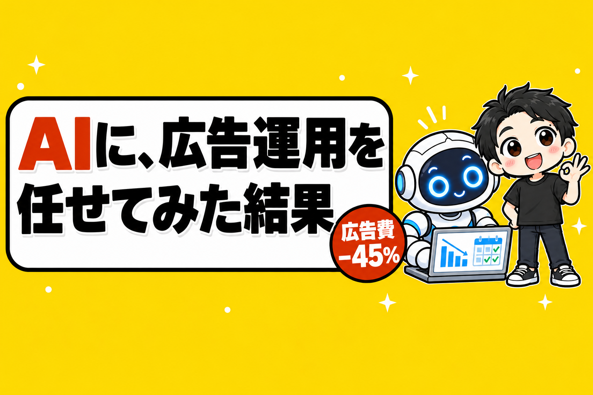

広告運用(広告の予算や出し方を調整する仕事)を、AIに任せてみました。
ふつうは「広告運用代行」に外注している仕事です。
結果から言うと、広告費は45%へって、公式サイトからの予約は減りませんでした。
28日間の広告費は、11万7,593円から6万4,454円へ。
止めた店も、減らした店も、自社予約の売上はむしろ増えています。
結論として、広告運用は、もうAIに任せられるところまで来ています。
この記事は、3つの順番で書きます。
- 任せる前に、ぼくが決めたこと
- AIがやったこと
- 28日たった結果
1. 任せる前に、ぼくが決めたこと
ぼくはレンタルスペース(時間で貸す部屋)のお店に、Google広告を出しています。
検索したときに、いちばん上に出てくるあの広告です。
広告費は、月に16万円ほどのペースになっていました。
そこで、ぼくが決めたのは2つだけ。
「16万円はかけすぎ。利益に対して10%くらい。半分の8万円にしたい」
「減らすのもあり。ゼロから考えて」
あとは、AIに任せました。
2. AIがやったこと
AIがやったのは、4つです。
1つ目は、数字を見ること。
店ごとに「広告費が戻ってくるライン」を出しました。
例えば、予約ボタンを押した人のうち、何%が本当に予約してくれたら、広告費が回収できるのか。
これが、店によって3倍以上ちがいました。
2つ目は、配分を決めること。
広告がなくても埋まっている店。
広告を出しても、なかなか予約につながらない店。
空いている時間が多くて、広告が効きそうな店。
その数字をもとに、5本の広告をこう分けました。
- 2本は、止める
- 2本は、予算を減らす
- 1本は、そのまま
3つ目は、画面で操作すること。
Google広告の画面で予算を変えて、広告文とキーワードも直しました。
4つ目は、結果を判定すること。
15日目の中間と、28日目の最後の判定を、決めた日にAIが自動で出してくれました。
この4つ、ふつうは外注します。
広告代理店やフリーランスの「広告運用代行」。
大きな会社なら、社内の「広告運用担当」。
よく言われる運用代行の手数料の目安は、広告費の20%前後です。
その間、ぼくがやったのは3つだけです。
- 「利益の10%くらいに」「減らすのもあり」という方針を決めた
- 広告を保存するときの、Googleの本人確認
- 結果を見て、このまま続けるかを決めた
もちろん、AIも完璧ではありません。
最初の日、AIが予算を入力する欄でEnterを押してしまい、1つの店の予算が意図しない額になりました。
翌日に気づいて直して、それからは「変えたら、必ず合計を見る」がルールになっています。
人が運用しても、同じようなミスはあると思います。
ちがうのは、ミスをルールに書いておけば、AIは次から毎回それを守ることです。
※AIに広告の画面を操作させるかどうかは、各サービスの規約を確かめたうえで、自己責任でお願いします。
3. 28日たった結果
28日間ためしてから、その前の28日間と比べました。
曜日の並びも同じにそろえています。
広告費は、11万7,593円から6万4,454円へ。
5万3,139円、45%の減りです。
では、予約はどうなったか。
止めた店・減らした店の4つで、公式サイトからの予約(自社予約)の売上を比べました。
| 店 | 広告 | 自社予約の売上の差(28日) |
|---|---|---|
| A店 | 止めた | +1,064円 |
| B店 | 減らした | +40,440円 |
| C店 | 減らした | +35,530円 |
| D店 | 止めた | +53,630円 |
4店とも、減っていません。
ただし、正直に書いておくことが2つあります。
1つ目。予約サイト経由の予約は減りました。
予約サイトからのお客さんが、公式サイトの予約に移った分もあるからです。
それを差し引いても、もうけ(粗利)は4万6,518円のプラスでした。
広告費を削った分と合わせると、28日で約10万円の改善です。
2つ目。新しいお客さんは減りました。
はじめての方が使うクーポンの数が、78件から47件へ。
いまは常連さんの予約で埋まっていますが、新規が細ると1〜2か月後に効いてきます。
11月にもう一度数えて、戻っていなければ、いちばん効率のいい店から広告を少し戻す予定です。
ほかにも、同じ時期にLINEのクーポンを変えたり、店内に案内を貼ったりしています。
なので、全部が広告の見直しの効果ではありません。
それでも、広告を半分近く減らしても、自社予約は減らなかった。
ここは、はっきり言えます。
10/13・10/14の記事で、「人がパソコンでやる仕事は、AIに変わっていく」と書きました。
それを、自分の店で見た形です。
ぼくも、会社員のまま1部屋目を出しました
少しだけ自己紹介を。
ぼくは製薬会社のサラリーマンをしながら、37歳のとき、90万円でレンタルスペースを始めました。
40歳で会社を辞めて、これまでに23店舗、売上は累計1.5億円を超えました。
いまは、お店の運営の多くをAIに任せています。
広告も、そのうちの1つになりました。
広告運用は、AIに任せられる
まとめます。
- 人が決めるのは、方針だけ
- 広告費を45%削っても、自社予約は減らなかった
- 宿題は、新しいお客さんが減ったこと
持ち帰ってほしいのは、判定の1行です。
「削った広告費」が「減った売上 × 粗利率」より大きければ、減らしたほうが得。
広告は、かけるほど安心します。
でも、減らしても予約が減らない店は、意外とあります。
あなたのお店の広告、一度AIに「ゼロから」見直してもらいませんか?
1部屋目で黒字にするには、1日何時間の予約が必要か。
無料の診断で、30秒で出せます。
診断のあとに、ぼくが物件を決めるときの順番を1日1通ずつ届けるメール講座(全8通)も受け取れます。

物件探しから、月いくら残るかの計算、出店、撤退まで。23店舗の数字といっしょに、教科書にぜんぶ書いています。
レンタルスペース経営の教科書

販売価格は3部売れるごとに2,000円ずつ値上がりします（上限あり）。内容・最新価格は販売ページをご確認ください。
▼もう1つの副業、AI社員だけのeBay輸出店の実録🐹

▼ブログ(レンスペ×eBay、全記事まとめ)